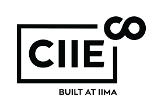
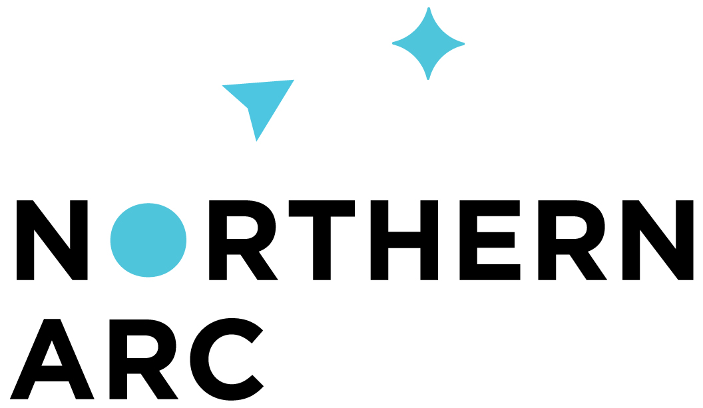
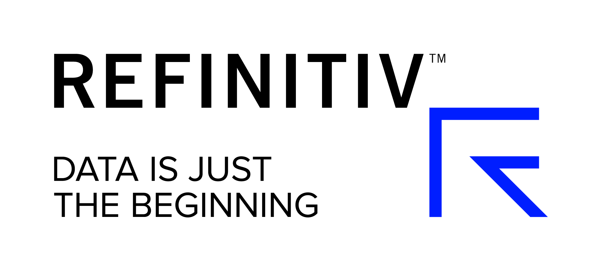

10th Emerging Markets Finance Conference, 2019
(In collaboration with the S.P.Jain Inst. of Management Research and Vanderbilt Law School)
Speaker Profile
Previous conferences
| EMF 2018 |
| EMF 2017 |
| EMF 2016 |
| EMF 2015 |
| EMF 2014 |
| EMF 2013 |
| EMF 2012 |
| EMF 2011 |
| EMF 2010 |
Program Committee
- Bhagwan Chowdhry, ISB
- Vikramaditya Khanna, University of Michigan Law School
- N. Prabhala, CAFRAL
- Subrata Sarkar, IGIDR
- Ajay Shah, NIPFP
- Rambhadran Thirumalai, Indian School of Business
- Susan Thomas, IGIDR
- Pradeep Yadav, Oklahoma University
- Yesha Yadav, Vanderbilt University – Law School
- Kumar Venkatraman, Southern Methodist University
11th December 2019
| 18:00-21:30 | Pre-conference speakers' dinner By invitation only |
12th December 2019
| 08:30-09:00 | Registration and tea/coffee |
| 09:00-09:50 Chairperson |
Inaugural
Opening address by Randall Thomas, Vanderbilt Law School Keynote talk by Hendrik Bessembinder, Arizona State University Does Return Horizon Matter? Implications for stock returns, mutual fund returns, and investment performance measurement [presentation] |
| 09:50-10:00 | Coffee and tea break |
| 10:00-11:10 | Session I: Securities Markets A Machine Learning Approach to Inflation Forecasting in Emerging Economies [paper] [presentation] Kriti Mahajan and Anand Srinivasan CAFRAL Discussant: Sourish Das, Chennai Mathematical Institute Liquidity provision: Normal times vs Crashes [paper] [presentation] Ravi Jagannathan, Kellogg School of Management; Loriana Pelizzon, Goethe University Frankfurt; Ernst Schaumburg, AQR Capital Management LLC; Mila Getmansky Sherman, University of Massachusetts Amherst; Darya Yuferova, Norwegian School of Economics Discussant: Nidhi Aggarwal, IIM, Udaipur [presentation] |
| 11:10-11:30 | Coffee and tea break |
| 11:30-13:15 Chairperson |
Session II: Information processing in markets Yesha Yadav, Vanderbilt University – Law School Earnings Uncertainty and Attention, [paper] [presentation] Badrinath Kottimukkalur, George Washington University Discussant: Rajeswari Sengupta, IGIDR [presentation] Informed Trading and the Cost of Capital: The Influence of Public and Private Information Florian Bardong, SysAMI Advisors,Germany, Sohnke M. Bartram, University of Warwick Jeffrey R. Black, University of Memphis and Pradeep Yadav, University of Oklahoma Discussant: Venkatesh Panchapagesen, IIM, Bangalore Unemployment insurance and takeovers [paper] [presentation] Lixiong Guo, University of Alabama, Jing Kong, Michigan State University and Ron Masulis, UNSW Business School Discussant: Kaushik Krishnan, IGIDR |
| 13:15-14:00 | Lunch |
| 14:00-15:30 Chairperson |
Session III: Responses to financial stress Susan Thomas, Finance Research Group, IGIDR A Structured-Renegotiation Theory of Corporate Bankruptcy Anthony J. Casey, The University of Chicago Law School [paper] [presentation] Untying the Gordian Knot: Interconnectedness, stability and the post-crisis reforms [paper] [presentation] Dermot Turing, Kellogg College, Oxford |
| Discussants: | Bhagwan Chowdhry, ISB Rob Downey, EY Shubhashis Gangopadhyay, India Development Foundation Neeti Shikha, IICA [presentation] |
| 15:30-15:45 | Coffee and tea break |
| 15:45-16:30 Panelists |
Panel: "Research to publication: an editor’s perspective" Hendrik Bessembinder, Managing Editor, Journal of Financial and Quantitative Analysis Heidi Raubenheimer, Managing Editor, Financial Analysts Journal Vidhu Shekhar, CFA Institute (Moderator) Pradeep Yadav, Member, Editorial Board, The Review of Finance |
13th December 2019
| 08:30-09:00 | Registration and tea/coffee |
| 09:00-10:10 | Session IV: Firm choices – governance Directors’ Duties, the Courts and the Public/Private Divide Jennifer Hill, Monash University Discussant: Adam Feibelman, Tulane University [presentation] Spinning the CEO Pay Ratio Disclosure [paper] Audra Boone, Texas Christian University, Austin Starkweather and Joshua T. White, Vanderbilt University Discussant: Ranjan Banerjee, SPJIMR |
| 10:10-10:30 | Coffee and tea break |
| 10:30-11:40 | Alibaba and the Rise of the Law-Proof Insiders Jesse M. Fried, Harvard Law School Discussant: Subrata Sarkar, IGIDR [presentation] A Comparative Analysis of Shareholder Inspection Rights in India and the U.S. [presentation] Randall Thomas, Vanderbilt University, Neha Joshi and Umakanth Varottil, National University of Singapore Law Discussant: Bhargavi Zaveri, Finance Research Group [presentation] |
| 11:40-13:00 | Lunch talk: Staying Private: The Costs of Private Empires Robert Jackson Jr., Commissioner, US Securities and Exchange Commission |
| 13:00-14:30 Panelists |
Panel: "Coping with the financial crisis" Kshama Fernandes, Northern Arc Capital Maninder Juneja, True North LLP. Ajay Shah, NIPFP Nikhil Shah, Alvarez & Marsal Mahesh Vyas, CMIE |
| 14:30-16:20 Chairperson |
Session V: Firm choices – operation Kose John, NYU Stern School The Effect of Conflict on Lending: Empirical Evidence from Indian Border Areas [paper] [presentation] Mrinal Mishra and Steven Ongena, University of Zurich Discussant: Renuka Sane, NIPFP [presentation] Debt Buybacks and the Myth of Creditor Power [paper] [presentation] Yesha Yadav, Vanderbilt University – Law School Discussant: Anjali Sharma, Finance Research Group [presentation] Banking on Innovation [presentation Frederick Tung, Boston University School of Law Discussant: Susan Thomas, Finance Research Group, IGIDR [presentation] The chair summary: Perspectives on Innovation Kose John, NYU Stern |
| 18:30-21:00 | Dinner |
14th December 2019
| 08:30-09:00 | Registration and tea/coffee |
| 09:00-10:10 Chairperson |
Session VI: Courts Mahesh Krishnamurthy, Omidyar Network New perspectives on the workload of the NCLT using daily cause-lists [presentation] Anjali Sharma, Finance Research Group, Susan Thomas, Finance Research Group, IGIDR, Bhargavi Zaveri, Finance Research Group A vision statement for the Indian judiciary. [paper] [presentation] Surya Prakash B.S. and Ritwika Sharma, Daksh |
| Discussants: |
Harish Narasappa, Daksh Bhargavi Zaweri, Finance Research Group |
| 10:10-11:20 |
Thinking aloud: “The judiciary in commercial matters” Marc Gross, Senior Counsel, Pomerantz LLP. The Hon’ble Justice Sanjay Kishan Kaul, Supreme Court of India K. P. Krishnan, Ministry of Skills Development (Moderator) Vice-Chancellor Slights, Delaware Court of the Chancery The Hon. Alastair Norris, High court of England and Wales Taeko Suzuki, Nishimura & Asahi |
| 11:20-11:30 | Coffee and tea break |
| 11:30-12:40 Chairperson |
Session VII: “Financial inclusion - risk management” Yesha Yadav, Vanderbilt University – Law School Chennai 2015: A novel approach to measuring the impact of a natural disaster Ila Patnaik, Renuka Sane and Ajay Shah, NIPFP Discussant: Samir Shah, Dvara Research [presentation] How Does Informal Risk-Sharing Influence Insurance Decisions? Theory with Field Evidence [paper] [presentation] Francis Annan, Georgia State University and Bikramaditya Datta, IIT, Kanpur Discussant: Tanika Chakraborty, IIM, Calcutta [presentation] |
| 12:40-13:40 | Lunch talk: Securing land rights in the era of urbanization, comercialization, and climate change [presentation] J.B. Ruhl, Vanderbilt University |
| 13:40-14:50 | Session VIII: Financial inclusion - financial intermediary interfaces Anatomy of Depositor Disciplining Mechanism: Selection, Voice and Exit Saibal Ghosh, Reserve Bank of India, Fulin Li, University of Chicago and Nishant Vats, University of Chicago Discussant: Harsh Vardhan, SPJIMR Unshrouding Financial Product Features: Do Rules of Thumb Work? Olga Balakina, Lund University, Vimal Balasubramaniam, Queen Mary University of London, Aditi Dimri, University of Warwick and Renuka Sane, NIPFP Discussant: Vidhu Shekhar, SPJIMR [presentation] |
| 14:50-15:05 | Coffee and tea break |
| 15:05-16:15 Panelists: |
Panel: "FinTech for Entrepreneurs: is the promise real?" Praveen Hari, JiT Finco Nat Malupillai, Michael & Susan Dell Foundation India LLP. Supriya Sharma, CIIE.CO Vidhu Shekhar, SPJIMR Mohammed Riaz, Xtracap Fintech India Pvt. Ltd. |
| 16:15-16:30 | Closing remarks |
Note: Confirmed speakers at the conference are marked in boldface.

 |
|
  |

|